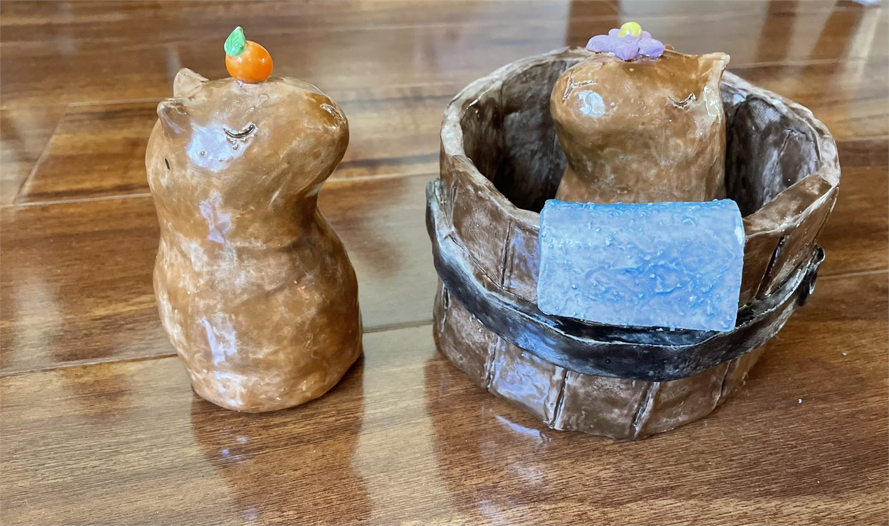
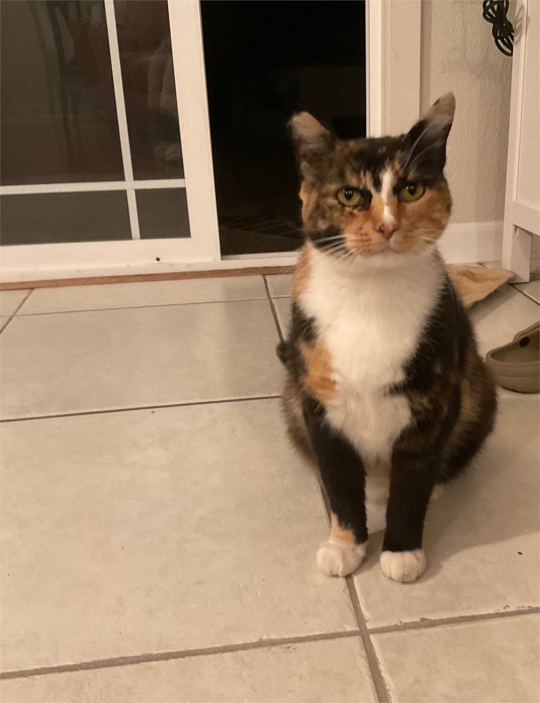
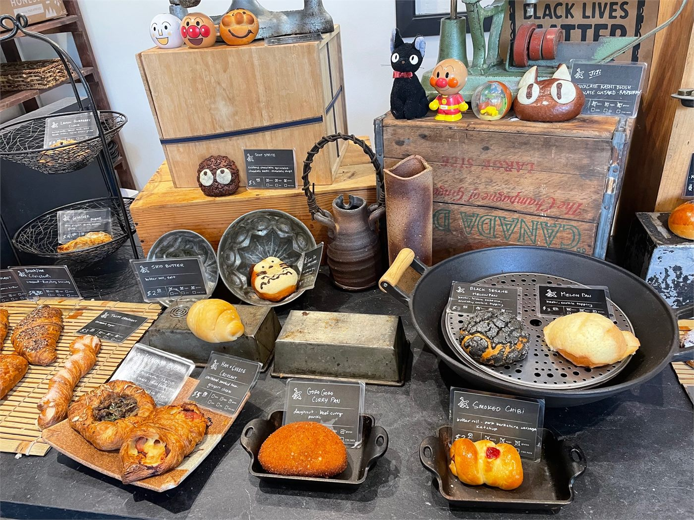
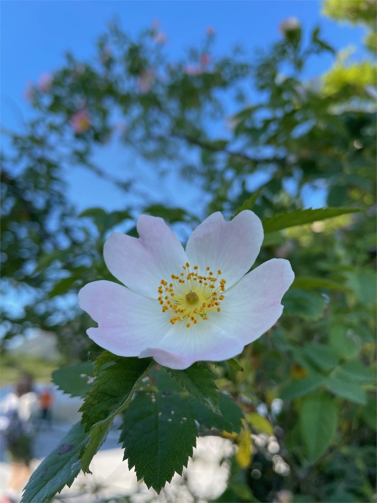
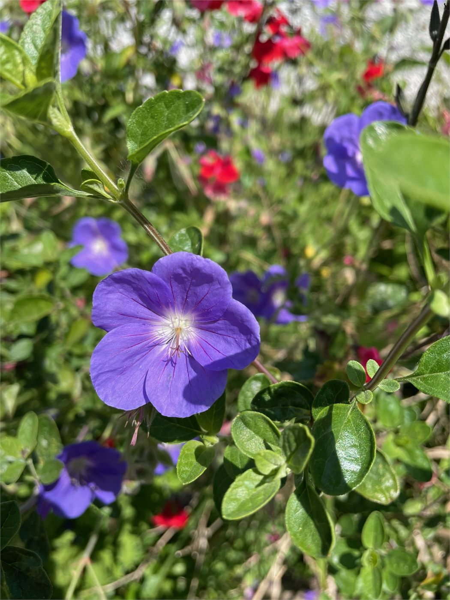
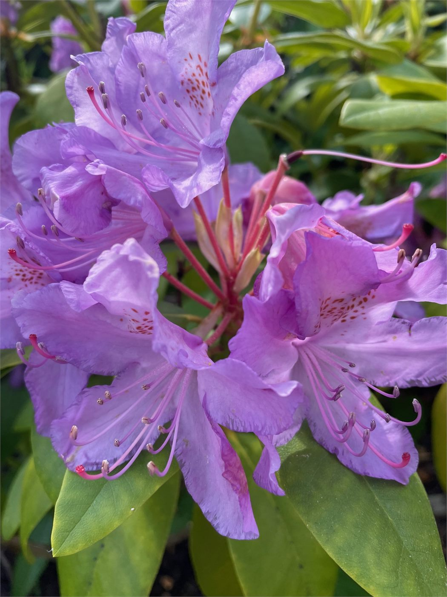
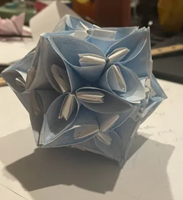
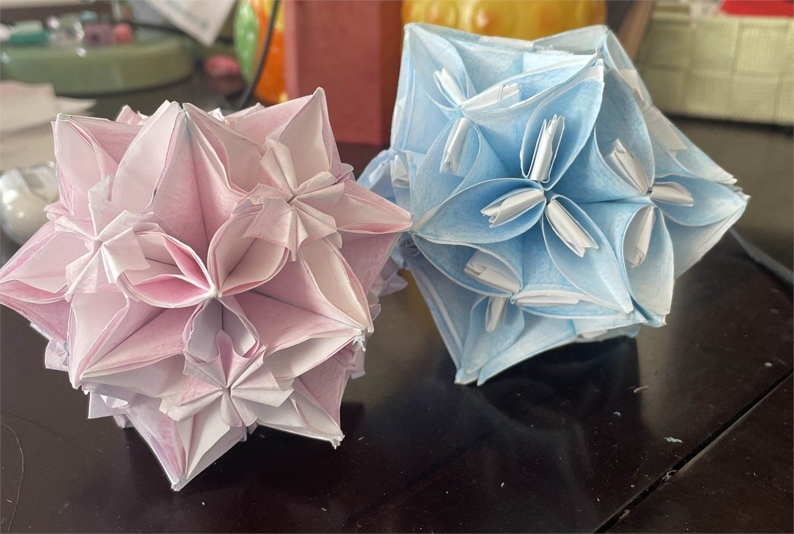

i'm particularly interested in algeba / number theory and ai safety / llms. i like math for its beauty, and i'm interested in contributing to the ai revolution that's taking place. in my past life i did a lot of math contests; problem-solving is really fun.
to appear in publication: "On the set of atoms and strong atoms in additive monoids of cyclic semidomains"
i've been skating for... 11 years now! i have all my doubles other than double axel :) i mainly compete in showcase. i also have done toi and excel. i used to do toi and i also am on a hs skating team (contact me to join if you're a high schooler within the bay area! we accept all skill levels). my skating is in this playlist.
i am a very avid music listener!!! particularly pop (k-pop!) and r&b
this includes: language-learning, sketching, ceramics?, kusudama, cats, food, nature, karaoke, rock climbing, being a barista
now here are some images!
capybaras i made yay

i like cats. i feed three stray cats :) here is one we affectionately named "flower cat"

a totoro-themed bakery in boston called japonaise bakery. cafe-hopping?!

pretty pictures i took of flowers from ireland



some kusudama

